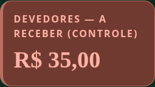
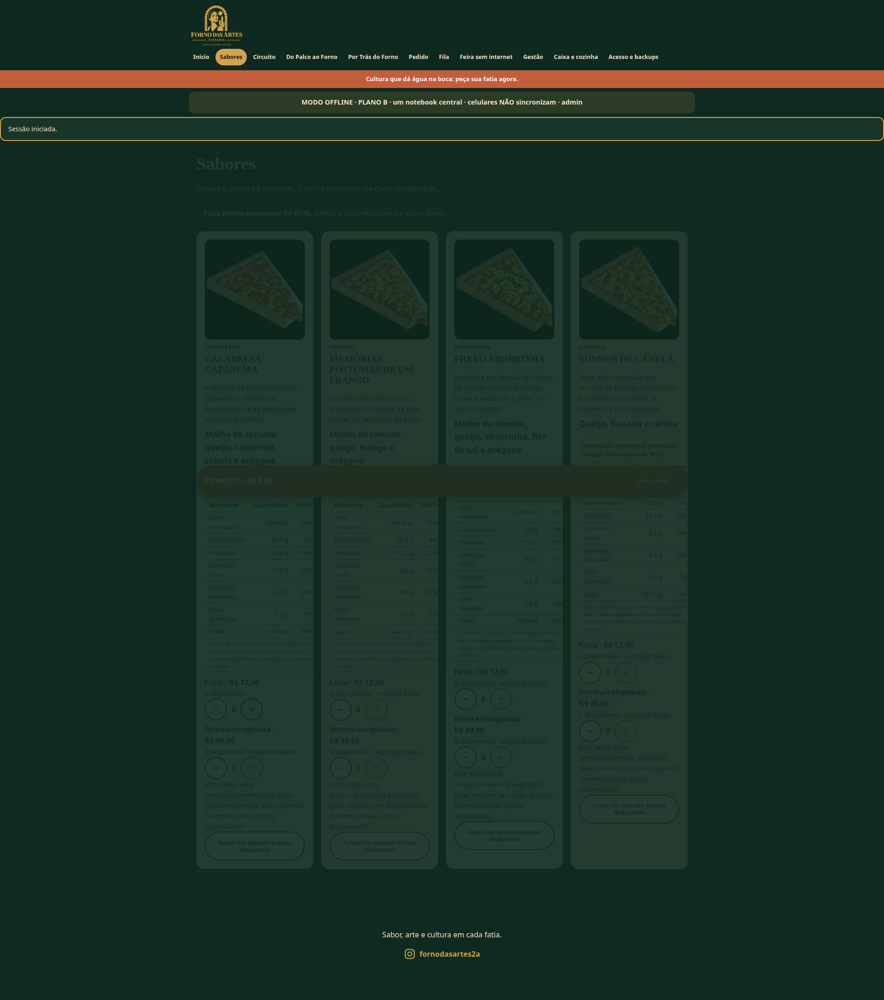
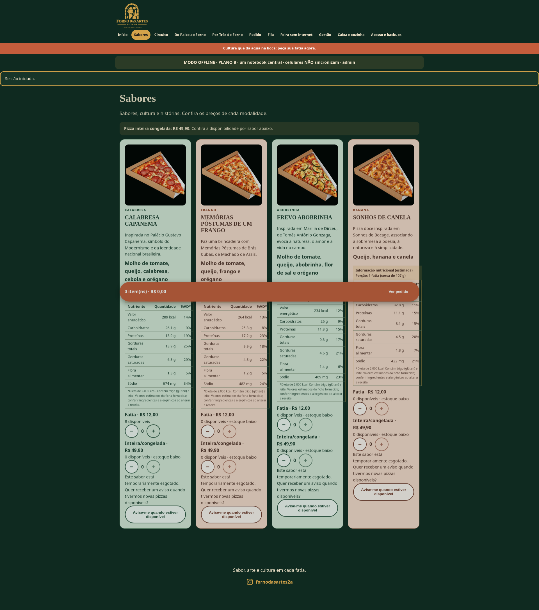
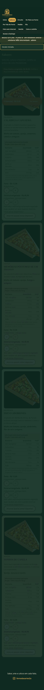
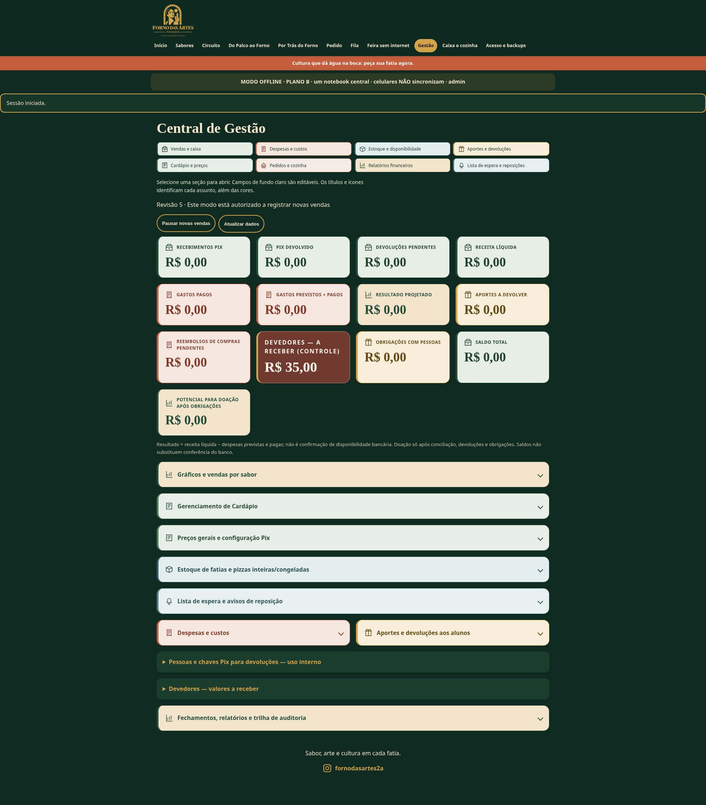
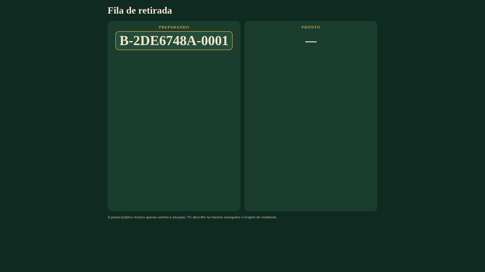
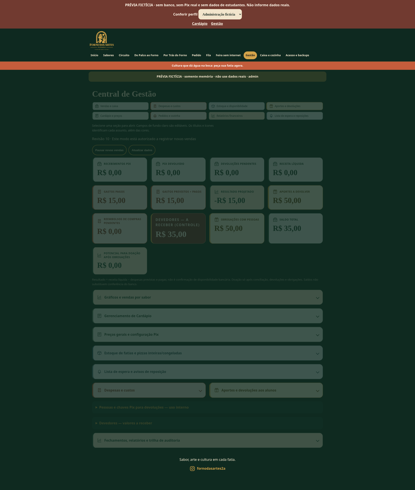

Antes · Devedores

Dados e identidades fictícios. Sem banco operacional, Pix real ou oito dispositivos sincronizados.
Abrir prévia fictícia · Relatório · Instalação Windows/totens · 44 testes Node · 15 testes do iniciador · 8 cenários adicionais · 12 cenários de regressão
Os “antes” de desktop foram capturados aplicando o CSS do commit 1922a4f sobre o mesmo cenário fictício, sem alterar dados; os “depois” usam o CSS atual. Não são capturas do notebook operacional.






